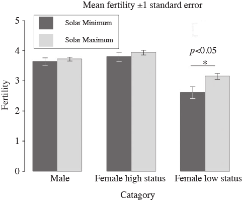
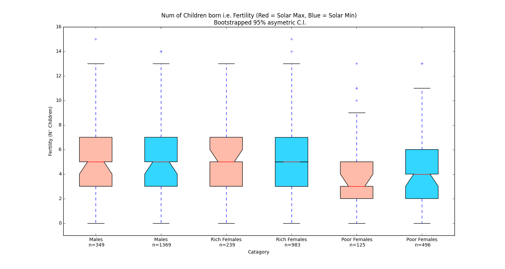
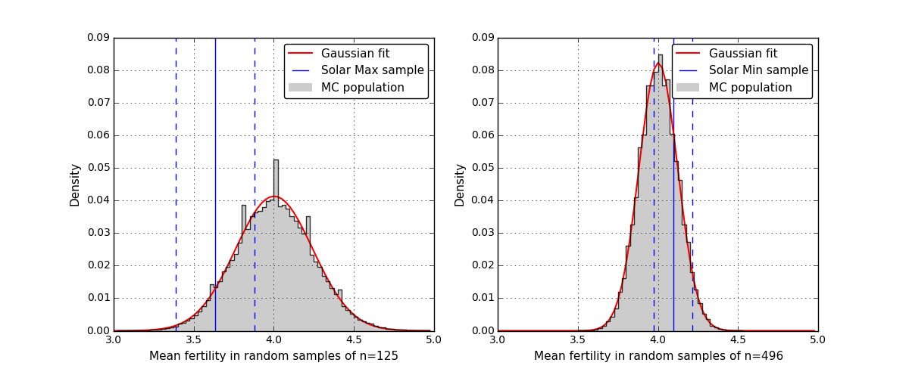

Earlier this year some colleagues emailed around the latest paper claiming a strong causal relationship between the solar cycle and some Earth-bound phenomena, in this case the fertility and lifetime of people born during different phases of the solar cycle in Norway from historic records. Usually, such studies are cause for some mirth, and make for useful examples of common statistical problems, see for example the relationship between cosmic rays and car crashes, or heart attacks and the solar cycle. The study was carried out by a group of Norwegian researchers and published in the prestigious Proceedings of the Royal Society B, and could be considered to be a confirmation study as it notes that it is supported by earlier findings.
The paper is "Solar activity at birth predicted infant survival and women's fertility in historical Norway", by Gine Roll Skjærvø†, Frode Fossøy and Eivin Røskaft of the Department of Biology, Norwegian University of Science and Technology (NTNU), in Norway.
Being of a sceptical orientation I of course wished to see the data for myself, as did numerous others. So followed an interesting email exchange with the authors and several other researchers who were all eager to sink their teeth into the original data. At first the authors were very reticent to share their code and data, and they were apparently unaware that Proc. Roy. Soc. B has a policy regarding open access, which is summed up as "the right to read is the right to mine". It means that any analysis published in their journal must support open code and data, and so after this was pointed out to the authors, they shortly sent out a version of their data and R code. Which you too can download exactly as I received it here. If you struggle to reproduce all their results from these files alone however you will not be alone, and I suggest you can email Prof. Eivin Roskaft directly for further explanation and potentially missing data/code.
The paper has received relatively high-amounts of attention and been absorbed into news networks and social media. You can see the paper is in the top 5% of articles in the Altmetrics system, and ranks in the 97th percentile of attention for articles published around the same time. So, what are the claims of the article to warrant such attention?
The study analysed Church records from Norway between 1676 and 1878, examining features such as recorded births and deaths. The authors reached several strong conclusions, such as being born during solar minimum reduces the likelihood of surviving to adulthood by cutting human lifespan by 5.2 years. The authors essentially proposed that this was due to higher levels of UVB received by unborn babies.
When looking at solar-correlation studies, I often find that many are a quagmire of messy logic, so much so that it is difficult to know where to start assessing their validity. Personally, I like to go straight for the core finding, the most significant result, and work outward from there. If there is a problem with the core result, then I will consider the study in error and stop, if not I will keep going until all claims withstand scrutiny.
In this paper one of the most purportedly statistically significant claims is that solar activity is significantly related to the number of children born (fertility) in lower-class women, with these women bearing on average 0.14 less children during the solar maximum than during the solar minimum (p=0.027). This relationship did not hold true for the higher-class women. The sample of lower-class women was drawn from 621 individuals over 162 years, while the upper-class women sample was drawn from 1222 individuals over 202 years. These results are shown below, and are a bar chart comparison of the mean fertility (with some uncertainty estimate) for upper (wealthy) and lower (poor) class women in Norway. Indeed, the upper-class women have a similar fertility in years of solar maximum and solar minimum, while the lower-class women show a seemingly clear difference in the mean.

Fertility (mean + s.e.) in relation to solar activity for men and for women in relation to socio-economic status. *p , 0.05. Dark grey bars denote SSmax, light grey bars denote SSmin. adapted from Figure 2. Now, I don't wish to be disparaging of fellow researchers, however, there are common stereotypes in science that Biologists on the whole have some issues with statistics and reproducible results (for example see here or here). Indeed, it does seem to be the case here that the authors have simply run some data through an R-package without clearly understanding what is going on, and consequently are led to what I am now confident are unjustifiable conclusions. I say this as I have gone back over their data and created a simple IPython Jupyter notebook (available on Github) to see what is really going on. The details delve into a particularly favourite topic of mine, random sampling. If you want details on the method I use below you can find them in an open-access article of mine published in the Journal of Space Weather and Space Climate.
Firstly, my notebook shows the basic results of the fertility difference are reproducible: this time instead of a simple bar-chart, I have used notched box-plots. These show more details, in particular giving a better idea of how similar the means of the population are, and also the whole population distribution. The notches are in fact a statistical test of a kind, they show the position of the mean value with a 95% confidence. The figure shows that while the mean of the solar minimum population is larger than at solar maximum, there is still pretty clearly some overlap in the values. So the big question here is, how significant are the differences in the means between the low-class women's fertility at solar maximum vs. solar minimum? In particular, I want to know are these differences distinguishable from random samples.

Notched box-plots showing differences in fertility by gender, and social class (female only) during solar minimum (blue) and solar maximum (red) periods. See Notebook for more details. Before I answer this question though, there is another important factor to consider that should be quite a red-flag here. While the authors have stated the original sample sizes of their groups (e.g. n = 621 lower-class women, n = 1222 upper-class women), this does not give you any clear indication of how the samples are broken up when sub-divided into solar maximum and minimum periods. From my box-plot I included these numbers: You can see that for high-class women the split is 239 to 983, while for the lower-class women 125 to 496. Thus the samples are certainly not even, and while this isn't automatically a problem (as many statistical tests can account for this), it is a problem if you wish to directly compare properties of the sub-samples (such as mean values), because, as I will show below sub-sampling can result in different distributions (particularly when the sub-samples are relatively small).
So, how to see the statistical significance of the mean value? There is an easy way with a Monte Carlo approach. It simply involves starting from the full n = 621 group of lower-class females, and then randomly taking a sub-sample of that population. You find the mean of that sub-sample, make a note of it, and then repeating this procedure over-and-over again, say 100,000 times (best not to try it by hand...). The only complication is that you have to make sure that you are taking a sample of the same size (n) as the one you are interested in evaluating (in this case it means that the solar maximum and minimum samples must have different Monte Carlo populations, as they had n = 145 and n = 496 respectively).

Monte Carlo distributions of random cases drawn from the low-class women fertility data, with sample sizes matching the solar maximum (n=125) and solar minimum (n=496)samples. The blue lines show the mean (and uncertainty) of the actual samples. See Notebook for more details. So, from the Monte Carlo approach, I created two distributions of mean values, the results of which are visible as a PDF (probability density function) as the grey shaded regions in the above figure. These represent the null-case, that is to say that they are the means you could expect to get when nothing special is going on in the samples (i.e. this is what the range of values for no relationship between solar activity and fertility should look like). To these distributions I have over-plotted the mean value of the samples the authors obtained (and the uncertainty, i.e. possible range of values), shown in the blue lines. So, you can qualitatively interpret this figure by comparing the position of the blue lines against the grey distribution values: the more towards the middle of the grey distribution the less unusual it is. You see immediately that the blue range is quite large, spanning a considerable portion of the distribution in both cases, and is not located in the tails (unusual portions) of the distributions.
In the end, this shows that the solar minimum fertility of the lower-class women (of 4.09 ±0.12) ranks in the 77.8th percentile with upper and lower certainty values of 96.0 and 41.51 percentile respectively compared to random samples. The Monte Carlo has shown a Gaussian distribution fits the data, and so I can use the sigma values to estimate probability: The average value of the solar minimum sample has a sigma of 0.77 (with an uncertainty range between 1.76 to -0.22 sigma). This translates to a two-tailed probability value of p=0.44, with the potential to be anywhere between p=0.08 and p=0.83. So, nothing unusual there.
The solar maximum sample mean (of 3.62 ±0.25) for lower-class women is certainly more shifted to the tail of the PDF, at the 6.2th percentile, and a upper/lower 95% certainty range of 0.4th / 30.6th percentile. This relates to a mean sigma value of -1.53 with uncertainty over a range of -2.56 to -0.51, relating to two-tailed probability values of p=0.13, and an uncertainty range over p0.01 to p0.61. So while it is tending towards significance in the most favourable estimates of the mean, it is definitely not highly significant.
To me, these results do not support the authors claim of a highly p<0.05 significant difference between fertility of low-class women at solar maximum and minimum. As this was the strongest result presented, I am no longer motivated to check the results further, but if you are particularly interested to further the notebook I am happy to accept pull-requests.
I think it is interesting to note though, the authors go quite far in their interpretation of their results, writing: "Our findings suggest that maternal exposure to solar activity during gestation can affect the fitness of female children." They ask, "Why, then, is the fitness of women more sensitive to high solar activity during early life than is the fitness of men? First, solar activity could differentially affect the abortion rate of male and female fetuses. If only the most robust male fetuses survive, while all female fetuses survive, male fertility could be less affected.". They go on to say "[An] explanation for the observed gender differences is that the development of the reproductive organs is more costly in females than in males, and thus more at risk for developmental abnormalities when exposed to a stressor during organogenesis [44]. Concurrently, as the developmental period of the reproductive organs in the two sexes is different, testicular and ovarian organs most likely experience different hazards of in utero exposure [44] to, for example, UVR."
This is a good example of how with a little data, black-box statistics, some jargon, and a lot of imagination you can end up somewhere rather far from Science. So, to conclude: I wouldn't suggest anyone loose sleep worrying about having lost 5.2 years by being born during the wrong solar phase, and I would say this is yet another example of why manuscripts need to have code and data as visible and important as the manuscripts themselves.
Go Top
comments powered by Disqus